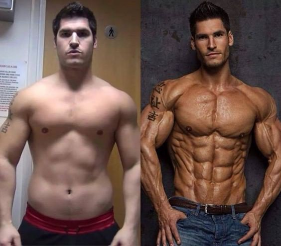

Rutina de entrenamiento en casa
(Días de entrenamiento: 4-5 días a la semana)
Día 1: Rutina de torso en casa:
-Flexiones de pecho: 4 series x 10-15 repeticiones.
-Fondos en sillas (tríceps): 3 series x 12 repeticiones.
-Dominadas o flexiones en T: 4 series x máximo de repeticiones (utiliza una barra de dominadas si la tienes o realiza flexiones en T).
-Plancha: 3 series x 45 segundos.
Día 2: Rutina de piernas en casa:
-Sentadillas: 4 series x 12-15 repeticiones.
-Zancadas estáticas: 3 series x 12 repeticiones cada pierna.
-Elevación de talones (gemelos): 4 series x 15-20 repeticiones.
-Plancha lateral: 3 series x 30 segundos cada lado.
Día 3: Rutina de brazos y hombros en casa:
-Flexiones diamante (bíceps): 4 series x 10-12 repeticiones.
-Fondos en sillas (tríceps): 3 series x 12 repeticiones.
-Pike push-ups (hombros): 4 series x 8-10 repeticiones.
-Elevaciones laterales (con botellas de agua o elementos pesados): 3 series x 12 repeticiones.
Día 4: Rutina de espalda y core en casa:
-Superman (espalda baja): 4 series x 15 repeticiones.
-Remo con objeto pesado (puede ser una mochila con libros): 3 series x 12 repeticiones.
-Mountain climbers: 4 series x 20 repeticiones.
-Plancha con elevación de piernas: 3 series x 30 segundos.
Día 5 (opcional): Rutina de acondicionamiento cardiovascular:
-Realiza 30-45 minutos de ejercicios cardiovasculares en casa, como saltar la cuerda, correr en el lugar, o seguir rutinas de entrenamiento cardiovascular en línea.
Consejos adicionales:
-Nutrición: Asegúrate de mantener una dieta equilibrada con un ligero déficit calórico si el objetivo es perder peso. Incluye proteínas magras, carbohidratos complejos y grasas saludables.
-Hidratacion: Bebe suficiente agua a lo largo del día para mantenerte hidratado.
-Descanso: Dales a tus músculos tiempo suficiente para recuperarse. El descanso adecuado es esencial para el crecimiento y la reparación muscular.
-Variación: Modifica la intensidad y la variabilidad de los ejercicios para mantener el interés y desafiar constantemente tus músculos.
Estos ejercicios son para realizarse sin ningun aparato deportivo ni ninguna instalacion, pero si usted tiene acceso a un gimansio o a aparatos deportivos, puede llevar su rutina al siguiente nivel:
-Rutina en GimnasioDieta para Endomorfos
(Dieta para 4 días)
Día 1:
Desayuno:
-4 claras de huevo revueltas con espinacas.
-1 taza de avena cocida con rodajas de plátano y una cucharada de almendras.
Almuerzo:
-Pechuga de pollo a la parrilla.
-Quinoa cocida.
-Brócoli al vapor.
Merienda:
-Batido de proteínas con leche y plátano.
Cena:
-Salmón al horno.
-Batata asada.
-Ensalada de hojas verdes con aderezo de aceite de oliva.
Día 2:
Desayuno:
-Tortilla de 2 huevos con espinacas y tomate.
-1 taza de avena con bayas y nueces.
Almuerzo:
-Filete de ternera a la parrilla.
-Quinoa cocida.
-Espárragos al vapor.
Merienda:
-Yogur griego con miel y almendras.
Cena:
-Pechuga de pollo al horno.
-Arroz integral.
-Ensalada de pepino y tomate.
Día 3:
Desayuno:
-Batido de proteínas con leche y plátano.
-1 taza de avena cocida con fresas y nueces.
Almuerzo:
-Ensalada de garbanzos con espinacas, tomate y aguacate.
-Pechuga de pollo a la parrilla.
Merienda:
-Batata asada.
Cena:
-Salmón al horno.
-Quinoa cocida.
-Brócoli al vapor.
Día 4:
Desayuno:
-4 claras de huevo revueltas con espinacas.
-1 taza de avena cocida con rodajas de plátano y una cucharada de almendras.
Almuerzo:
-Pechuga de pollo a la parrilla.
-Quinoa cocida.
-Espárragos al vapor.
Merienda:
-Batido de proteínas con leche y plátano.
Cena:
-Salmón al horno.
-Batata asada.
-Ensalada de hojas verdes con aderezo de aceite de oliva.
Consejos adicionales:
-Bebe suficiente agua a lo largo del día para mantenerte hidratado.
-Divide las comidas en porciones más pequeñas a lo largo del día para mantener un flujo constante de nutrientes.
-Ajusta las porciones según tu respuesta individual y la intensidad de tu entrenamiento.
-Incluye fuentes de grasas saludables como aguacate, aceite de oliva y frutos secos.